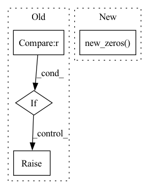

Pattern ID :28087

Before Change
Returns:
:obj:`AssignResult`: The assign result.
if points.shape[0] == 0 or gt_bboxes.shape[0] == 0:
raise ValueError("No gt or bboxes")
points_xy = points[:, :2]
points_stride = points[:, 2]
points_lvl = torch.log2(
After Change
if gt_labels is None:
assigned_labels = None
else:
assigned_labels = points.new_zeros((num_points, ),
dtype=torch.long)
return AssignResult(
num_gts, assigned_gt_inds, None, labels=assigned_labels)
points_xy = points[:, :2]
In pattern: SUPERPATTERN
Frequency: 3
Non-data size: 4
Instances
Fragment ID: 83028707
Project Name: wxinlong/solo
Commit Name: b69667001f250a54a37129a000a8d5160e047239
Time: 2019-12-24
Author: erotemic@gmail.com
File Name: mmdet/core/bbox/assigners/point_assigner.py
M Class Name: PointAssigner
N Class Name: PointAssigner
M Method Name: assign(5)
N Method Name: assign(5)
M Parent Class: BaseAssigner
N Parent Class: BaseAssigner
M File Name: mmdet/core/bbox/assigners/point_assigner.py
N File Name: mmdet/core/bbox/assigners/point_assigner.py
M Start Line: 48
M End Line: 55
N Start Line: 49
N End Line: 65
'>
Before Change
if self.inverted:
self.n, self.k = self.k, self.n
t = t.t()
if self.n < 2 * self.k:
raise NotImplementedError
self.base = torch.empty_like(t)
uniform_init_(self.base)
// TODO Register
After Change
t = t.t()
self.base = torch.empty_like(t)
uniform_init_(self.base)
self.register_parameter("fibr_aux", t.new_zeros(self.k, self.k//2 + self.k%2))
def trivialization(self, x, base):
// TODO Implement Cayley
'>
Fragment ID: 83028699
Project Name: lezcano/geotorch
Commit Name: ff383a69922656d0d280165edd4ab107619426a5
Time: 2020-03-11
Author: lezcano-93@hotmail.com
File Name: mantorch/orthogonal.py
M Class Name: StiefelTall
N Class Name: StiefelTall
M Method Name: init(2)
N Method Name: init(2)
M Parent Class: Manifold
N Parent Class: Manifold
M File Name: mantorch/orthogonal.py
N File Name: mantorch/orthogonal.py
M Start Line: 162
M End Line: 164
N Start Line: 164
N End Line: 167
'>
Before Change
Returns:
:obj:`AssignResult`: The assign result.
if overlaps.numel() == 0:
raise ValueError("No gt or proposals")
num_gts, num_bboxes = overlaps.size(0), overlaps.size(1)
After Change
if gt_labels is None:
assigned_labels = None
else:
assigned_labels = overlaps.new_zeros((num_bboxes, ),
dtype=torch.long)
return AssignResult(
num_gts,
assigned_gt_inds,
max_overlaps,
'>
Fragment ID: 83028703
Project Name: wxinlong/solo
Commit Name: b69667001f250a54a37129a000a8d5160e047239
Time: 2019-12-24
Author: erotemic@gmail.com
File Name: mmdet/core/bbox/assigners/max_iou_assigner.py
M Class Name: MaxIoUAssigner
N Class Name: MaxIoUAssigner
M Method Name: assign_wrt_overlaps(3)
N Method Name: assign_wrt_overlaps(3)
M Parent Class: BaseAssigner
N Parent Class: BaseAssigner
M File Name: mmdet/core/bbox/assigners/max_iou_assigner.py
N File Name: mmdet/core/bbox/assigners/max_iou_assigner.py
M Start Line: 125
M End Line: 128
N Start Line: 135
N End Line: 158